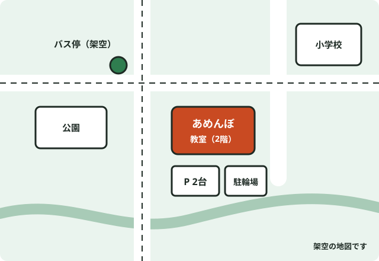

アクセスとよくある質問
公園の向かいの建物の2階です。駐車場は2台、駐輪場は4台分あります。
教室の場所

松山市 ○○町（架空）
建物の2階。階段の上がり口に、あめんぼの看板があります。
住所・建物は作例のための架空のものです。
来る方法
-
自転車で
建物の前に駐輪場が4台分あります。ヘルメットは教室の棚に置けます。
-
車で
駐車場は2台分です。体験の日は1台分を空けておきます。
-
送迎の待ち合わせ
授業が終わる5分前から、見学席で待てます。お迎えが遅れるときは、子どもは教室の中で待ちます。
よくある質問
パソコンを持っていなくても通えますか。
通えます。教室のノートパソコンを使うので、持ってくるものはありません。家で続けたい場合は、体験のときに必要な機械の目安をお伝えします。
休んだ回は、別の日に振り替えられますか。
同じ月のうちなら、空きのある回に振り替えられます。前日までに連絡をください。
何歳から通えますか。
小学1年生からです。ひらがなが読めれば、つみきコースから始められます。中学3年生まで通えます。
月の途中から入会できますか。
できます。その月の月謝は、残りの回数の分だけいただきます。
駐車場はありますか。
建物の前に2台分あります。埋まっているときは、送り迎えの間だけ建物の前に止められます。
きょうだいで通うと安くなりますか。
2人目からは、月謝が1,100円安くなります（架空の割引です）。同じ回に並んで通うこともできます。
ほかに聞きたいことは、予約フォームの「質問」の欄に書いてください。体験の日にお答えします。
体験を予約する